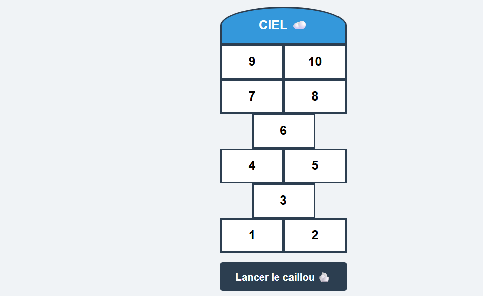
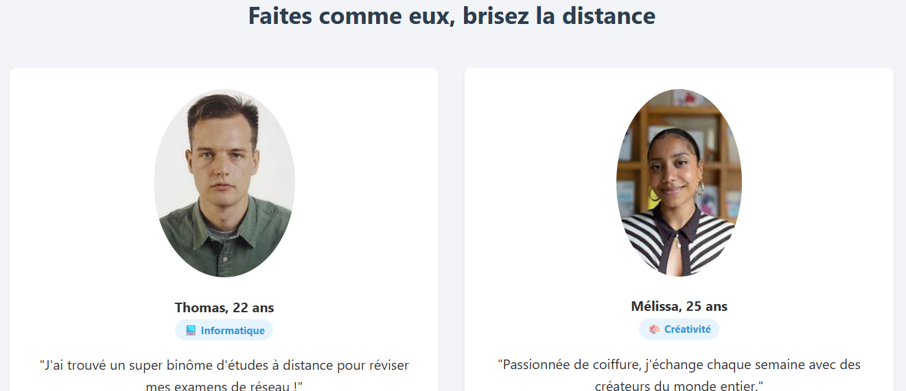
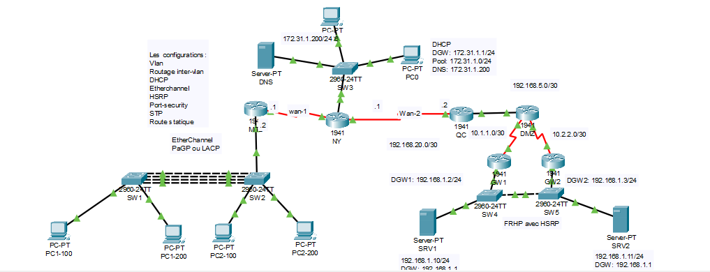

HTML, CSS, JavaScript, Cisco Packet Tracer, Windows Server.

Un jeu de cartes interactif développé pour pratiquer la logique en JavaScript.
Technologies : HTML, CSS, JavaScript
voir le site
Une page de présentation moderne et hautement professionnelle conçue pour une plateforme de mise en relation amicale à distance. Le site présente clairement le concept d'utilisation, met en valeur les témoignages de la communauté grâce à des fiches de profils ciblées, et propose un formulaire d'inscription direct pour engager l'utilisateur.
Technologies : HTML, CSS
voir le site
Conception et déploiement d'une infrastructure réseau complète simulant une entreprise multi-sites. Ce projet met en œuvre le routage inter-VLAN, la distribution dynamique d'adresses et la sécurisation des accès aux serveurs.
Téléchargez mon curriculum vitae ou lisez mes derniers articles sur la technologie.
Télécharger mon CV (PDF)